Os melhores animes de drama de 2022 são como top 10 attack on titan final season part 2;fruits basket-prelude-;kimetsu no yaiba;kotaro lives alone;the case study of vanitas part 2;yaboy kongming;dentre outros também temos animes de ação com spy x family;rust-eater bisco dentre outros se você gosta de romance tem o famoso anime de nome my dress up darling,já se você é fanatico por fantasia temos tambem a ilha da sombra;insect land;black clover;já se você é é mais da família gosta de animes para toda família tambem tem spy x family;heroines run the show(heroine tarumono);boku no hero;e esses são os melhores animes top 10 tambem tem os animes que não são conhecidos:são land of the lustrous;real drive e por incrivel que parece tokyo revengers não é conhecido
spy x family
em spy x family,conhecemos o agente secreto mais conhecido como twilight.para ele,nenhuma missão é complicada demais se o objetivo for manter a paz.por conta disso,twilight trabalha arduamente para manter a civilidade com o paisvizinho,a ficticia nação ostania
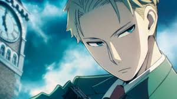
conhecemos tambem com uma familia nada convencional,anya forger é uma garotinha paranormal que protagoniza o anime spy x family ,junto de seu pai espião e sua mãe assassina de aluguel graças as suas habilidades mentais,ela sabe todos os segredos de seus familiares.
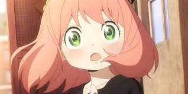
you forger é uma das protagonistas da serie de anime e manga spy x family.assim como a anya,a sua filha adotiva ela esta entre as personagens favoritas do show
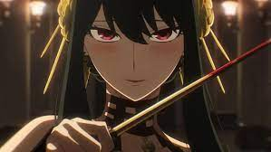attack on titan
a historia mostra uma era apocalíptica com 9 titãs e gigantes,que tentam atacar o planeta. os seres humanos se tornam o alimento principal dessas criaturas e precisam lutar para sobreviver nsse mundo fatasioso
os personagens principais são:
eren yeager
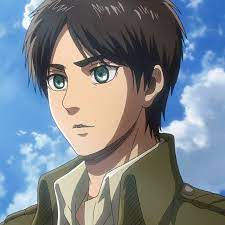eren yeager era um ex-membro da tropa de exploração ele foi o principal protagonista de attack on titan.ele viveu no distrito de shiganshina com sues pais até a queda de wall maria,onde testemunhou impotentemente sua mãoe sendo comida por um titã.este eventolevaria ao odiointenso de Eren pelos titãs,qando ele jurou varrer todos eles da face da terra.logo depois,seu pai,grisha yeager,o encontrou e lhe deu a have de seu porão,instruindo eren a encontrá-la a todo custo e retomar wall maria
levi ackerman
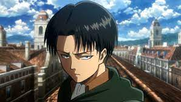levi ackerman,frequentimente referido formalmente capitão do esquadrão de operações especiais dentro da tropa de exploração.E é amplamente conhecido como o soldado mais forte da humanidade.
mikasa ackerman

mikasa ackerman é uma das protagonistas da serie.junto com armin arlet,depois que seus pais foram assassinados por traficantes de seres humanos,mikasa foi resgatada por eren yeager e morou com ele e seus pais,grisha e carla,antes da queda de wall maria.
fruits basked prelude

A história de Kyoko foi triste desde o início,Ela foi apresentada como uma pessoa nervosa e brava, mas isso não era tudo. Quando Katsuya a conheceu, ele viu sua natureza real, viu que ela só precisava de pessoas para amá-la, mas isso não lhe foi dado. Não vou me aprofundar para não dar spoilers, até porque é uma história bem curtinha, mas foi maravilhosamente emocionante
katoro lives alone
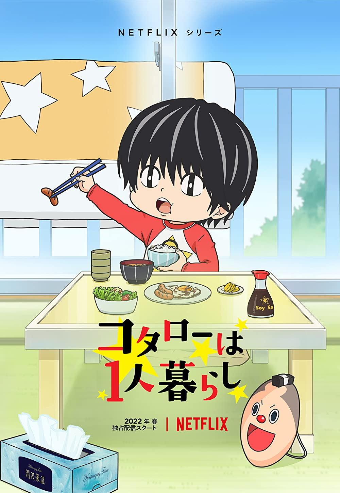Kotaro mora sozinho segue a vida de um menino educado chamado Kotaro,que não tem ninguém em quem confiar ou alguém para chamar de amigo. Felizmente, sua solidão não passa despercebida por seu vizinho, Shin Karino, que também está lidando com seu quinhão de lutas da vida. Os dois se unem para formar uma amizade extremamente saudável e ensinar um ao outro muitas coisas sobre alegria, família e pertencimento
the case study of vanitas
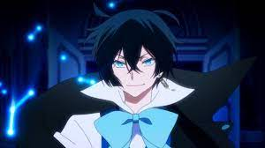Noé, um jovem vampiro que passou a maior parte de sua vida no interior da França, é enviado por seu professor a Paris com a missão de encontrar e avaliar um temido item chamado de Livro de Vanitas,Segundo as lendas, trata-se de um objeto amaldiçoado criado pelo Vampiro da Lua Azul com o propósito de vingar-se dos demais vampiros pela rejeição que sofreu. O livro teria o poder de interferir com seus Verdadeiros Nomes, causando descontrole e sede de sangue. Um incidente na aeronave em que está vindo à capital faz com que Noé fatidicamente cruze caminhos um rapaz humano que se apresenta como "um médico especializado em vampiros", autointitulado Vanitas e herdeiro do Livro. Intrigado pelo potencial do artefato e pela própria figura de Vanitas, Noé decide acompanhá-lo e se vê envolvido numa trama mais complexa do que pressupunha
ya boy kongming
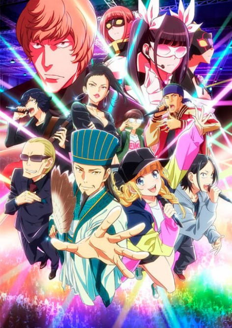O anime acerta bastante, em trazer “flashbacks” da época das guerras do três reinos, mesclando com os dias atuais. Ao decorrer da trama, o rapper Kabetaijin se une ao grupo, graças a ajuda de Kongming. A parte das batalhas de Rap, mostra um pouco desse mundo, e vai agradar ao amantes desse estilo de música
rust eater bisco
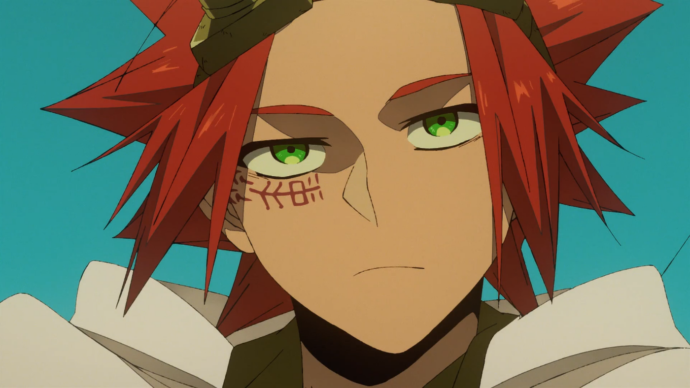Um menino chamado Bisco Akaboshi da desprezada tribo Mushroom Guardian, embarca numa jornada para obter o cogumelo “Rust-Eating” – uma droga milagrosa que purifica toda a ferrugem – para salvar o seu professor moribundo
my drees up darling
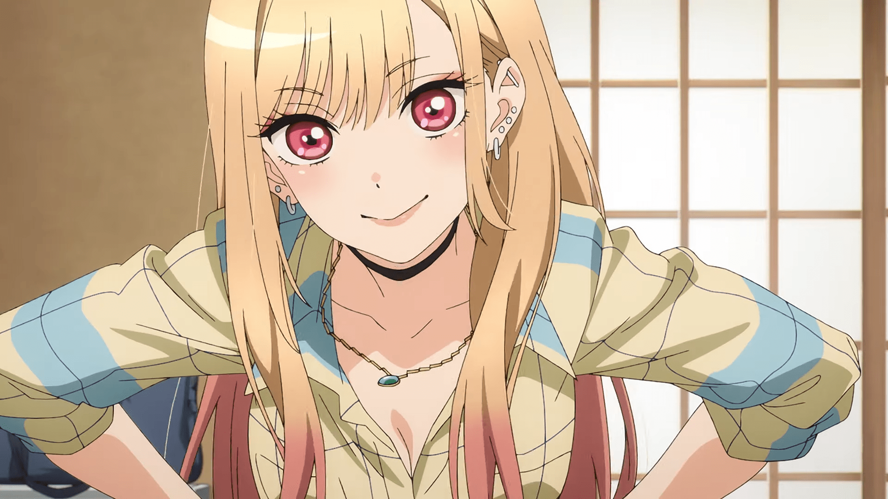Quando criança, Wakana Gojou,foi traumatizado por uma amiga que achava seu gosto e afeição por bonecas algo estranho. Vindo de uma família que produz bonecas artesanais, ele acabou crescendo solitário e aperfeiçoando o ofício passado de geração a geração. Ele esculpe, pinta, costura roupas e passa um bom tempo admirando o próprio trabalho que requer dele tanta dedicação. Wakana não tem amigos e costuma se refugiar na escola para não ter que interagir com as pessoas, e também evitar que descubram sua obsessão por bonecas. Um dia, Marin Kitagawa encontra Wakana costurando e resolve compartilhar com ele seu hobby secreto. Marin ama cosplay, porém, não possui nenhuma habilidade ou conhecimento em costura para conseguir produzir suas roupas. Os dois adolescentes se aproximam após Wakana prometer a Marin ajudá-la na confecção do cosplay de suas personagens favoritas. A dupla percebe que, além do hobby incomum, ambos possuem outras características em comum e que podem aprender muito um com o outro
a ilha das sombras
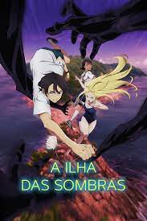Ao saber da morte de Ushio, Shinpei retorna à sua cidade natal de Wakayama City em Hitogashima e se reúne com a família de seu amigo de infância. O funeral corre bem, mas sob a superfície algo estranho está se formando na ilha. Que mistérios o aguardam nesta isolada ilha de verão
insect land
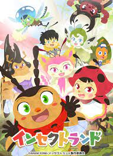A história da série se passa no minúsculo país "Insect Land", e segue o lindo dia a dia dos insetos enquanto ensina às crianças sobre a ecologia de vários insetos
black clover
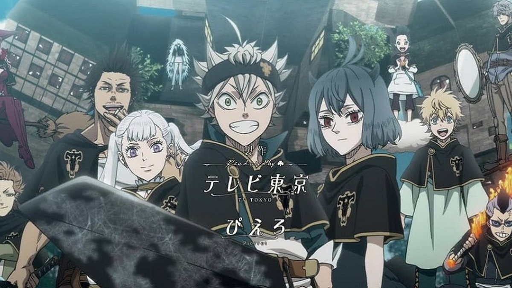A história acompanha os dois garotos que competem entre si para se tornar o Rei Mago, o cavaleiro mágico mais forte do reino de Clover. Mesmo sem magia Asta tenta ser um cavaleiro mágico, assim sua jornada começa quando obtém o misterioso poder "anti-magia", que pode anular todas as magias
heroine tarumono
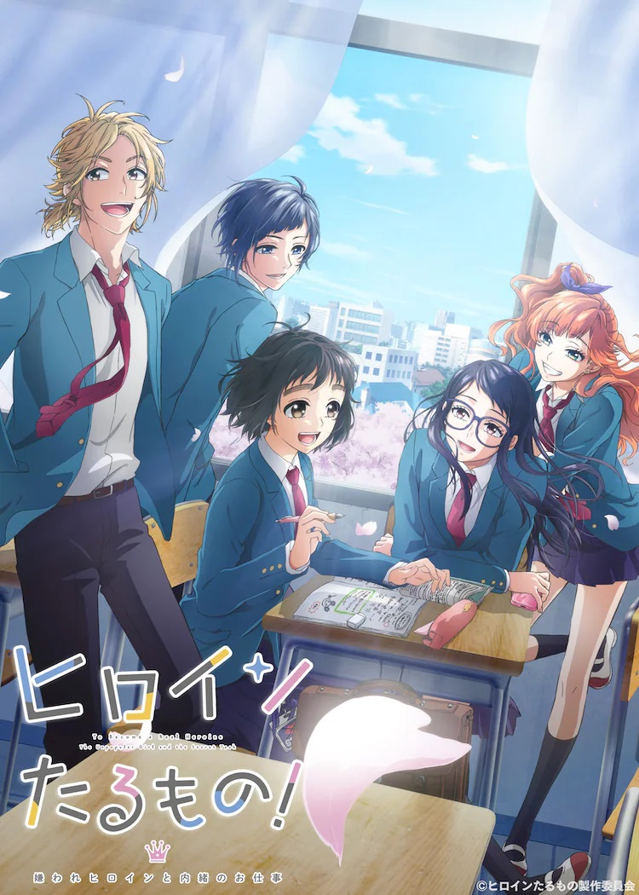
“A história do anime segue Hiyori Suzumi, uma estudante do ensino médio que se torna gerente em treinamento para uma unidade de ídolos do colégio LIP × LIP, Hiyori deixou sua cidade natal para seguir sua paixão pelo atletismo, matriculando-se na Sakuragaoka High School de Tóquio. Procurando emprego de meio período em Tóquio, ela acabou trabalhando como gerente aprendiz para seus colegas de classe (e membros do LIP × LIP) Yūjirō Someya e Aizō Shibasaki. A história gira em torno da maioridade de Hiyori (enquanto ela faz malabarismos com escola, vida extracurricular e gerenciamento) e LIP × LIP (conforme eles brilham no palco).
boku no hero
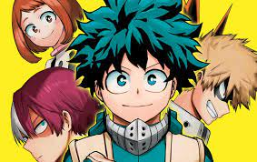Um mundo onde poderes começaram a existir, e as pessoas que os possuem, chamam seus poderes de "individualidade", 80% da população atual possui, os outros 20% são comuns... Como é o caso do jovem Midorya. Midorya quer, desde criancinha, ser um herói, graças ao símbolo da paz, All Might, que ele admira de mais, Por ter nascido normal, entrar na escola de heróis era impossível, porém, algo, um dia, simplesmente acontece, um encontro que muda tudo
land of the lustrous
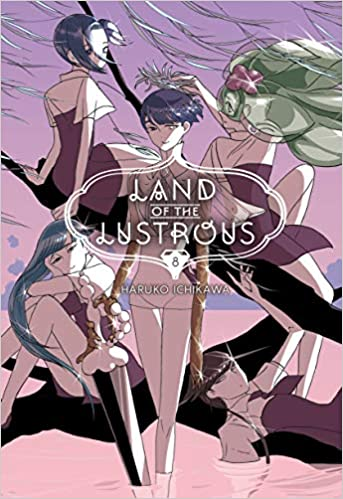A história do manga decorre num futuro distante, onde uma nova forma de vida chamada “hōseki” (gems -pedras preciosas) nasce. As 28 gems têm que lutar contra os “tsukijin” (pessoas da lua) que querem atacá-los e torná-los decorações, então a cada gem é atribuído um papel, tal como lutador ou um médico
real drive
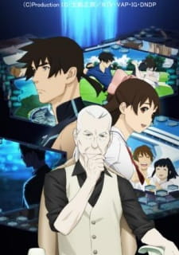
Masamichi Haru é um mergulhador profissional que tem sua vida completamente alterada em um acontecimento insólito. Junto a um grupo de pesquisadores e seu melhor amigo Eiichirou Kushima, ele faz um mergulho livre (sem aparelhos) a uma grande profundidade em alto mar, testando os limites de seu cérebro para um experimento. Só que durante o mergulho uma estranha visão toma sua mente, e de repente se passaram 50 anos desde o mergulho,Haru acorda em uma cama de hospital, paraplégico. Todos os dias ele ainda tenta entender o que aconteceu no mergulho, quando viu algo como um mar de glóbulos vermelhos a sua frente e foi atacado por eles… só que tão estranho como o evento de 50 anos atrás é a sociedade de 2061, regida pela Meta Real Network, ou apenas The Metal, criação de seu amigo Kushima. Todas as funções mecânicas e até pensamentos humanos são armazenados e compartilhados na rede, num ambiente virtual muito semelhante a um oceano em que principais os dados são armazenados em esferas chamadas de Bubble Shells, que só podem ser exploradas por “mergulhadores virtuais”. Agora é comum as pessoas terem cérebros com implantes cibernéticos e até membros biônicos, mas os mergulhadores virtuais não precisam de um corpo físico saudável pra exercer suas funções, e é aqui que Haru tentará se encaixar. Só que o evento que lhe tomou 50 anos de vida parece querer se reproduzir dentro da Metal, que começa a sofrer colapsos pois muitas pessoas começam a não ver diferença entre as experiências da realidade virtual e do mundo real… Fica a dúvida se é apenas uma falha no sistema, ou se a própria realidade como conhecemos começou a rejeitar a raça humana. E para deixar o agora “velho Haru” mais confuso, ele acaba tendo a companhia da adolescente Minami Aoi, estudante e voluntaria a cuidar dos idosos do asilo que hoje é a casa do mergulhador. Será que pode existir amor entre indivíduos de idades tão diferentes ? Dentre tudo que precisa redescobrir como ser humano, o amor é realmente necessário,Idealizado por Masamune Shirow, Real Drive aborda muitos elementos comuns a carreira do autor. E isso infelizmente tira muito da graça dessa produção de 2008, pois pouca coisa aqui não foi explorada de forma mais dinâmica em outras criações dele, fora o grande numero de coisas dentro desse universo cyberpunk que encontramos por aí, em diversas mídias. Todos os protagonistas são muito bem construídos e explicados, é verdade, mas o desenvolvimento lento da trama e a direção as vezes confusa acaba entediando o expectador menos interessado nesse tipo de produto. Se estiver querendo algo mais visceral como as obras mais famosas de Shirow como Ghost in The Shell e Appleseed, passe longe desse anime, mas se por outro lado tiver interesse em animes mais psicológicos, meio contemplativos e cheio de mensagens ecologicas, Real Drive será uma ótima opção. Nem precisei citar que tecnicamente a animação é excelente, algo padrão da Production I.G mesmo em séries pra televisão. E algo que achei interessante foi o character design das mulheres, não sei porque o Shirow resolveu fazer todas elas mais “cheinhas”
tokyo revengers

Tokyo Revengers gira em torno de Takemichi Hanagaki, um homem de 26 anos mal sucedido na vida em todos os âmbitos, desde o profissional à relações amorosas. Um certo dia, ao assistir um jornal na TV, Takemichi descobre que sua primeira namorada havia sido morta num incidente que envolvia gangues de Tokyo. Essa notícia mexeu bastante com o rapaz, que ficou pensativo sobre a perda de seu primeiro e único amor. Ao entrar numa estação de metrô, Takemichi é empurrado aos trilhos e quando estava prestes a ser atropelado algo surpreendente acontece: ele viaja 12 anos no passado, voltando para a época de escola quando ainda namorava Hina. Ele então tem a chance de, 12 anos no passado, mudar o destino de sua amada e salvá-la do perigo que lhe espera no futuro. O personagem então descobre que sua viagem no tempo funciona com o auxílio de Naoto, o irmão mais novo de Hina. No futuro, Naoto se torna policial e pede ajuda a Takemichi, que faz as viagens sempre que aperta a mão de seu cunhado. Porém, o protagonista acaba errando ao tomar algumas decisões e isso faz com que o final seja sempre o mesmo: a morte de Hina. Em alguns casos até se agrava, pois Takemichi acaba vendo amigos morrendo no presente como reflexo de suas ações no passado. Ele realiza os saltos temporais inúmeras vezes na tentativa de salvar todos que ama, mas para isso descobre que precisa adentrar no mundo das gangues de motoqueiros juvenis. Assim, Takemichi conhece a Toman (abreviação de Tokyo Manji) e seus integrantes: o líder Mikey e seu braço direito Draken, além de outros personagens que a história nos apresenta no decorrer dos episódios. Qual é o enredo do anime? O anime mistura em sua trama dois elementos que não são tão explorados: gangues e viagens no tempo. Apesar de viagem temporal ser algo abordado em uma ou outra obra, da forma que vem sendo trabalhada no universo desse anime é novidade. Já em relação a gangues, no Japão temos alguns mangás que retratam histórias ligadas a Yakuza, gangues juvenis e etc. Mas no Brasil, esse tipo de conteúdo chega em pouca quantidade. Isso torna a obra original mais interessante e dá um ar de originalidade ao roteiro, A relação entre esses dois elementos casou muito bem, principalmente pela dinâmica em que a viagem no tempo,funciona e a relação fraternal entre os personagens
kimetsu no yaiba
Em Kimetsu no Yaiba, Tanjiro, um bondoso jovem que ganha a vida vendendo carvão descobre que sua família foi massacrada por um demônio. E, para piorar, Nezuko, sua irmã mais nova e única sobrevivente, também acabou transformada em um demônio.
personagens principais
tanjiro kamado
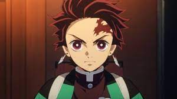Tanjiro nasceu em uma montanha como o filho mais velho de Kie e Tanjuro Kamado.uma família de vendedores de carvão. Depois que seus cinco irmãos mais novos nasceram, ele adotou a ideia de que, como filho mais velho, deveria ser forte e suportar todas as adversidades por eles.
zenitsu
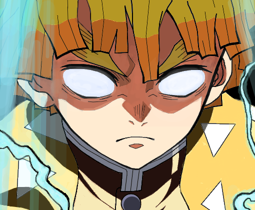O mestre de Zenitsu foi um ex-Pilar, "cargo" exercido por qualquer caçador de demônios que esteja em atividade e ranqueado entre os nove melhores no Corpo de Matança Demoníaca. O "vovô" resgatou o garoto e o fez seu discípulo, passando ensinamentos em específico e aprofundados sobre a Respiração do Trovão.
inosuke
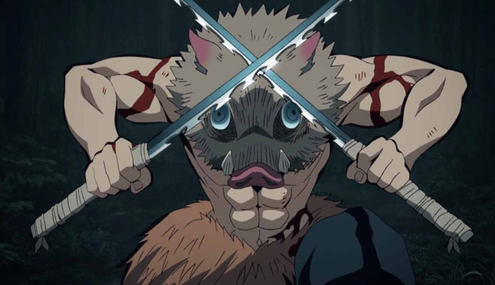Inosuke foi, aparentemente abandonado por sua mãe e, sucessivamente, acabou sendo criado nas montanhas por uma javali fêmea e frequentemente sendo alimentado por aldeões próximos dali, além disso, ganhou também instintos (e modos) animais por conviver com tantos.
nezuko kamado
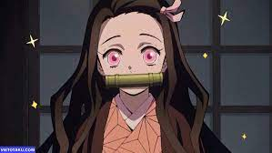Nezuko cresceu em uma montanha ao lado de seu irmão mais velho, Tanjiro, e o resto de seus irmãos e mãe, como a filha mais velha da família Kamado. Ela presumivelmente cuidou de seus irmãos mais novos como assistente de sua mãe, como foi brevemente testemunhado antes da morte de sua família.